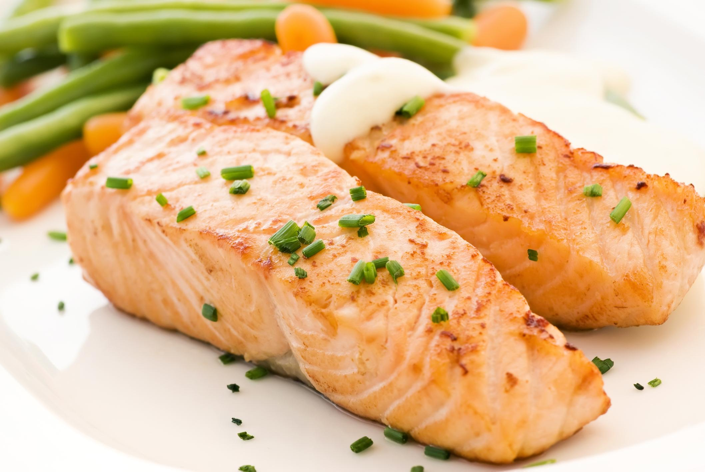

Descripción
Un plato elegante y sofisticado: salmón fresco con una deliciosa salsa de mantequilla y limón. Perfecto para cenas especiales.
Ingredientes
- 4 filetes de salmón fresco (150g cada uno)
- 150g de mantequilla
- 2 limones (jugo y ralladura)
- 3 dientes de ajo picados finamente
- 200ml de caldo de pescado
- 100ml de vino blanco seco
- Perejil fresco picado
- Eneldo fresco (opcional)
- Sal y pimienta al gusto
- Aceite de oliva
Pasos de preparación
- Seca el salmón con papel absorbente y sazónalo con sal y pimienta.
- Calienta aceite de oliva en una sartén grande a fuego medio-alto.
- Sella el salmón por ambos lados durante 3-4 minutos cada lado. Retíralo y reserva.
- En la misma sartén, sofríe el ajo hasta que aromático (1 minuto).
- Vierte el vino blanco y deja que se reduzca 2 minutos.
- Añade el caldo de pescado y el jugo de limón.
- Introduce el salmón nuevamente en la sartén.
- Cocina a fuego medio durante 5-7 minutos hasta que el salmón esté cocido.
- Retira el salmón con cuidado y colócalo en los platos de servicio.
- Aumenta el fuego y reduce la salsa hasta que se concentre (3-4 minutos).
- Retira del fuego y agrega la mantequilla en pequeños trozos, mezclando suavemente.
- Vierte la salsa sobre el salmón.
- Decora con perejil fresco, eneldo y ralladura de limón.
- Sirve caliente inmediatamente.
Tiempo de preparación
Preparación: 10 minutos | Cocción: 20 minutos | Total: 30 minutos
Porciones
Rinde 4 porciones